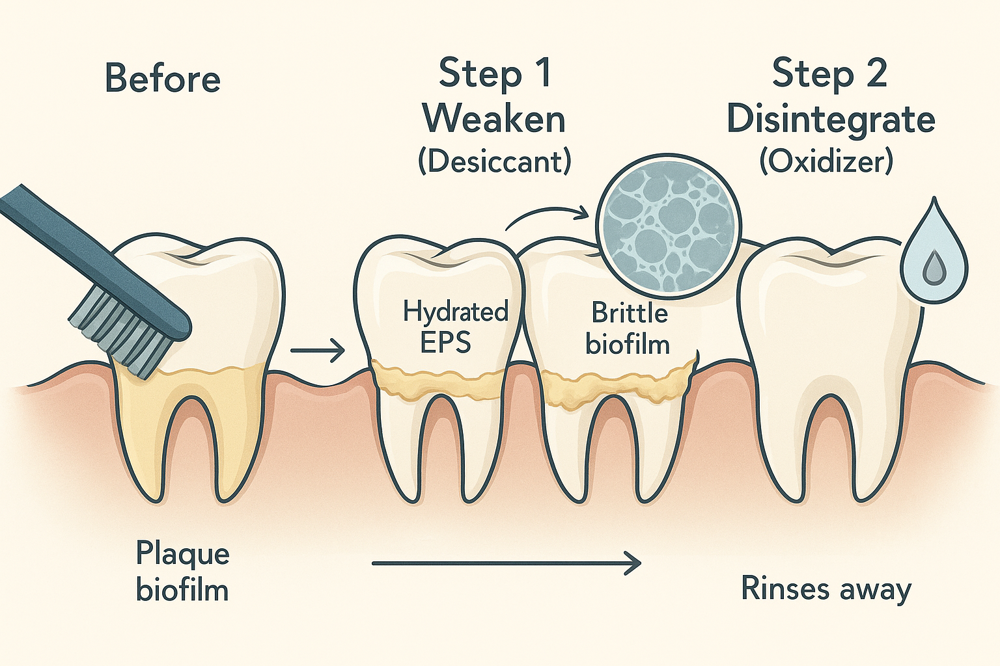

🧪 The Innovation
A sequential, two-step oral-care system that first dehydrates (weaken) the plaque biofilm with a fast, topical desiccant and then oxidizes (disintegrate) the already-brittle matrix with a low-dose oxidizer.
Inspiration from "Piranha Solution"
In semiconductor labs, "piranha solution" removes stubborn organic films by dehydration + radical oxidation (sulfuric acid + hydrogen peroxide → peroxymonosulfuric acid). We borrow only the logic, not the chemistry: recreate the weaken-then-oxidize sequence with biocompatible agents for plaque. The aim is the same structural outcome (biofilm loses integrity), achieved safely at oral pH and dosage. (PMC, FDA Report)
Important Safety Note
This document analogizes the sequence of piranha cleaning but does not propose piranha reagents for oral use. Piranha solutions are dangerous laboratory oxidants and must never be used in or near the body. (FDA Report)
📸 Concept Visualization

Weaken → Disintegrate™ Process
Complete conceptual diagram showing the bio-safe analogy to piranha cleaning: sequential dehydration followed by oxidation for effective plaque matrix breakdown. Step A uses a brief topical desiccant to collapse plaque hydration and denature matrix proteins, making deposits brittle. Step B follows with a low-dose oxidizer (~1.5% H₂O₂) to fragment the weakened matrix and oxidize surface organics for improved removal.
🎯 Problem & Baseline
Plaque biofilms are water-rich matrices of extracellular polymeric substances (EPS: polysaccharides, proteins, DNA) with embedded bacteria. The hydrated EPS confers adhesion, viscoelasticity, and tolerance to antimicrobials/mechanics.
Baseline Options & Evidence
- Powered brushing modestly improves outcomes versus manual: Cochrane found statistically significant plaque/gingivitis reductions (e.g., oscillating-rotating heads)
- Interdental devices (brushes, rubber picks) generally outperform floss for plaque/gingivitis in many studies; overall evidence quality varies
- Chlorhexidine is effective but stains and alters taste with sustained use; combinations with hydrogen peroxide have been studied to mitigate stain
- Peroxide rinses at ~1.5% H₂O₂ are recognized OTC oral debriding/cleansing agents; 3% solutions are labeled for first-aid/limited oral debriding use
The Gap
Baseline measures do not specifically target EPS water and matrix mechanics up front. The proposed sequence is designed to alter the biofilm's physical state first, then oxidize while the matrix is brittle, enabling easier removal with lower force.
⚗️ Proposed Solution
"Weaken" (Desiccation)
A brief, topical desiccant (benchmarks: sulfonated phenolics-based gels used clinically for oral debridement) collapses plaque hydration and denatures matrix proteins, making deposits brittle and less adhesive.
Dental precedent: HYBENX® debriding agent; PerioDT® desiccation technology.
"Disintegrate" (Oxidation)
Immediate follow-on low-dose oxidizer (e.g., ~1.5% H₂O₂ rinse or a controlled stabilized chlorine dioxide equivalent) to fragment the already weakened matrix and oxidize surface organics, improving rinse-out and brush-off.
Clinical literature documents oxidizer adjuncts to antimicrobials and routine plaque control.
Analogy Boundary
We adopt the sequence of "dehydrate → oxidize," not the reagents of piranha (H₂SO₄/H₂O₂); piranha is hazardous and incompatible with biology, used here purely as a conceptual template.
📊 Expected Improvement vs Baseline
| Dimension | Baseline Approach | Weaken → Disintegrate™ | Expected Benefit |
|---|---|---|---|
| Mechanics & Effort | Standard force needed for plaque removal | Lower detachment force post-desiccation | Easier interdental cleaning, improved reach in niches |
| Efficacy on Established Biofilm | Limited penetration of oxidizers | Oxidizers penetrate farther once water collapses | Improved short-contact efficacy vs. oxidizer alone |
| Aesthetics & Safety vs CHX | Chlorhexidine stains with sustained use | Short-contact peroxide step | Lower stain, better taste acceptance |
| Consumer Familiarity | Single-step applications | Two-step workflow (like Crest HD) | Market acceptance of sequenced applications |
✨ Novelty Assessment
Existing Precedents
- Desiccation in dentistry: Used professionally (e.g., HYBENX; periodontal pocket desiccation studies; PerioDT product family) — but not paired in sequence with an oxidizer for plaque deconstruction
- Two-step consumer systems: Crest HD pairs stannous fluoride with peroxide, but for dual indications (anti-gingivitis/anticaries + whitening), not matrix deconstruction synergy
- Combo formulas (single phase): e.g., dimethyl isosorbide + chlorine dioxide in one oral-care composition (US 10,517,808 B2). Single phase ≠ sequential weaken-then-disintegrate
- Adjunct oxidation with antimicrobials: Studies of CHX + H₂O₂ (combined/sequential) exist, typically to balance stain and antimicrobial performance—not desiccation-primed oxidation
Conclusion
The mechanism-coupled sequence (desiccation immediately followed by mild oxidation aimed at plaque matrix mechanics) is novel relative to current consumer and most professional offerings.
🚀 Impact-Readiness Levels (IRL)
| Level | Status | Description |
|---|---|---|
| IRL 1-2 | Principle | Mechanistic plausibility supported by biofilm EPS physics and clinical desiccation tools |
| IRL 3 | Bench Feasibility | Ex-vivo plaque chips & hydrogel EPS phantoms to quantify embrittlement (DMA) and oxidizer penetration vs. controls |
| IRL 4 | Safety Screen | Cytocompatibility of short-contact desiccant formulations on oral epithelial models; peroxide at OTC debriding levels |
| IRL 5 | Pilot Clinical | Split-mouth, 2–4 weeks: plaque index, BOP, stain indices, user experience vs. peroxide-only rinse and paste-only control |
| IRL 6-7 | Scaled Validation | Multicenter trials; device + drug labeling strategy |
| IRL 8-9 | Launch & Post-Market | Real-world adherence analytics; safety surveillance |
⚠️ Risks & Mitigations
- Soft-tissue irritation (desiccants): Strict short contact, controlled viscosity, neutralization/rinse step; in-vitro cytotoxicity screens. Professional use precedents inform guardrails
- Tooth sensitivity/taste (oxidizers): Keep within OTC debriding concentrations and brief exposures; flavor systems; avoid chronic daily high-dose use
- User complexity (two steps): Combine into single applicator with timed release or back-to-back mini-steps (Crest HD adoption shows users accept 2-step when benefits are clear)
Regulatory & Safety Notes
- Oxidizer step can align with OTC oral debriding/cleansing monograph ranges (~1.5% H₂O₂ rinse; some 3% solutions are labeled for brief oral debriding)
- Desiccation step may be regulated as a professional dental device (predicate examples exist for desiccating oral debriding agents), or as a cosmetic accessory if no therapeutic claims
- Early FDA consultation recommended for combination product strategy
📋 Evidence Plan
Bench (Month 0–3)
- EPS hydrogel (alginate-gelatin-DNA) coupons; Rheology/DMA pre/post desiccant; confocal penetration of 1.5% H₂O₂ tracer with/without Step-A pretreat
- Shear-off tests on ex-vivo plaque: detachment force vs. peroxide-only and CHX-only controls
Clinical Pilot (Month 4–8)
- N=40 split-mouth; endpoints: Turesky plaque index, bleeding on probing, Modified Lobene Stain Index, user effort/time
- Include Crest HD and H₂O₂-only arms for context
Success Criteria
- ≥10–15% additional plaque index reduction vs. oxidizer-only at matched dose
- Non-inferior stain to baseline
- Better perceived ease of interdental cleaning
Commercialization Notes
- Positioning: "Weaken → Disintegrate" as a task-oriented plaque-removal booster used 2–3×/week or as professional pre-debridement
- Form factors: dual-chamber pen; gel-then-rinse kit; chairside syringe + neutralizing rinse